QualiTrack · Proyecto Integrador SQA26Calidad de Software · Mtra. María de León SiggVersión 1.0 · 19/11/2026
Manual de usuario de QualiTrack
QualiTrack es el centro de control de aseguramiento de la calidad (SQA) de los proyectos de un equipo: registra cada proyecto del periodo, mide sus métricas contra un modelo definido, planea y registra las técnicas de SQA, lleva el registro de defectos y calcula el estado de salud de cada proyecto.
Funciona en cualquier navegador actual, en computadora y en celular.
Tu cuenta
Correo el que dio de alta el AdministradorContraseña la que te entregó
No hay registro abierto: el Administrador da acceso a cada integrante (sección 9).
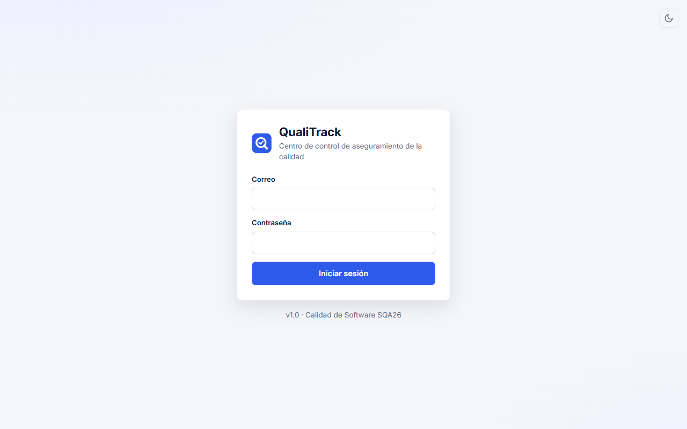
Pantalla de inicio de sesión.
Pasos
Abre la dirección de QualiTrack.
Escribe tu correo y tu contraseña.
Pulsa Iniciar sesión. Llegas al dashboard de proyectos.
Para salir
Pulsa el botón con la flecha junto a tu nombre, arriba a la derecha. La sesión también se cierra sola a las 8 horas.
La primera visita puede tardar
Si nadie ha usado QualiTrack en 15 minutos, el servidor se apaga y la primera visita tarda cerca de un minuto en cargar. Después funciona normal.
Para instalar QualiTrack en una computadora propia, sigue el README del repositorio (github.com/Yeef05/QualiTrack).
2Roles y permisos
Administrador
Todo lo del Líder de QA y, además, da acceso a los integrantes.
Líder de QA
Registra los proyectos, define su modelo de calidad y arma el plan de técnicas.
Miembro
Registra mediciones, ejecuciones de técnicas y defectos, y consulta todo.
Puede…
Admin
Líder QA
Miembro
Ver proyectos, métricas, técnicas, defectos y reportes
Sí
Sí
Sí
Registrar mediciones, ejecuciones de técnicas y defectos; cerrar defectos
Sí
Sí
Sí
Guardar el reporte en el historial y exportarlo a PDF
Sí
Sí
Sí
Registrar, editar, archivar y restaurar proyectos
Sí
Sí
No
Cambiar el modelo de calidad y agregar métricas propias
Sí
Sí
No
Agregar y quitar técnicas del plan
Sí
Sí
No
Dar acceso a integrantes
Sí
No
No
Lo que tu rol no puede hacer no aparece en tu pantalla.
3Pantallas de QualiTrack
Pantalla
Cómo llegar
Para qué sirve
Proyectos (dashboard)
Al entrar, o con "Proyectos" en el menú
Ver los proyectos del periodo y su salud
Proyecto · Métricas
Nombre del proyecto en el dashboard
Tendencia, estado de cada métrica, registrar mediciones y modelo de calidad
Proyecto · Técnicas
Pestaña Técnicas
Plan de técnicas, cumplimiento y ejecuciones
Proyecto · Defectos
Pestaña Defectos
Registro de defectos y sus 4 métricas
Proyecto · Reporte
Pestaña Reporte
Índice de salud, historial y exportación a PDF
Usuarios
"Usuarios" en el menú (solo Administrador)
Dar acceso a integrantes
4Proyectos del periodo
Ver los proyectos que requieren atención
Todos los roles
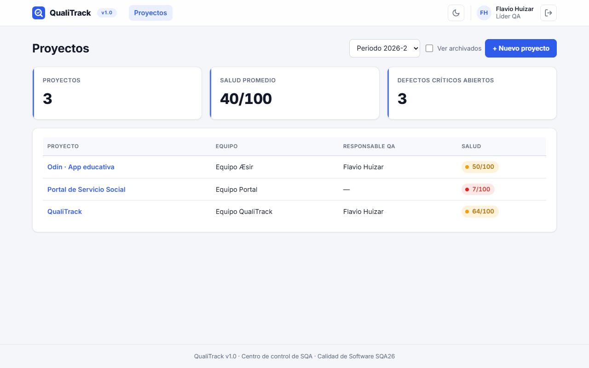
Dashboard del periodo 2026-2.
Tarjetas: cuántos proyectos hay, la salud promedio y los defectos críticos abiertos entre todos.
Tabla: cada proyecto con su equipo, su responsable de QA y su índice de salud. Punto verde ≥ 80, amarillo de 50 a 79, rojo < 50. "Sin datos" quiere decir que todavía no tiene mediciones.
Periodo: la lista de arriba cambia de periodo. Ver archivados muestra también los proyectos concluidos.
Pulsa el nombre de un proyecto para abrirlo.
Registrar un proyecto
Líder de QA y Administrador
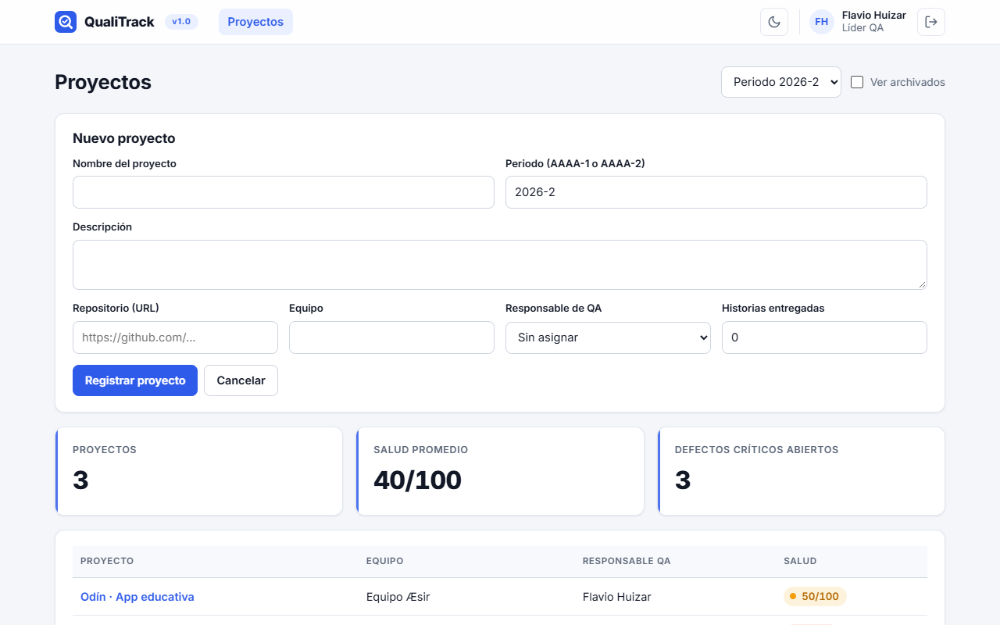
Formulario de "+ Nuevo proyecto".
Pasos
En el dashboard, pulsa + Nuevo proyecto.
Escribe el nombre y el periodo, con el formato AAAA-1 o AAAA-2.
Si quieres, agrega descripción, repositorio y equipo.
Elige el Responsable de QA de la lista de usuarios, o deja "Sin asignar".
Captura las historias entregadas: sirven para calcular la densidad de defectos.
Pulsa Registrar proyecto. Se abre el proyecto nuevo.
Si algo no es válido
El mensaje aparece debajo del campo y dice cómo corregirlo.
Solo puede haber un proyecto con el mismo nombre en cada periodo: Ya hay un proyecto llamado "…" en el periodo 2026-2; cambia el nombre o el periodo.
Editar, archivar o restaurar un proyecto
Líder de QA y Administrador
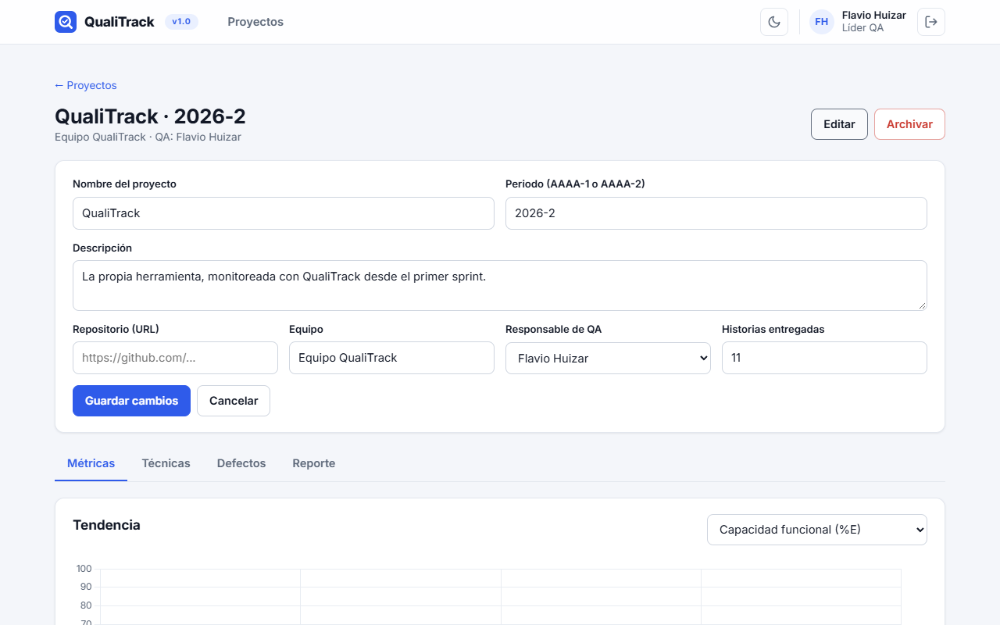
Editar: el mismo formulario con los datos guardados.
Editar, arriba a la derecha del proyecto, abre el formulario con los datos actuales. Pulsa Guardar cambios.
Archivar concluye el seguimiento: el proyecto queda de solo lectura (no acepta mediciones, defectos ni cambios en su modelo) y sale del dashboard, salvo con "Ver archivados". Conserva todo su historial.
Restaurar lo regresa a activo.
5Métricas y modelo de calidad
Revisar el estado de calidad
Todos los roles
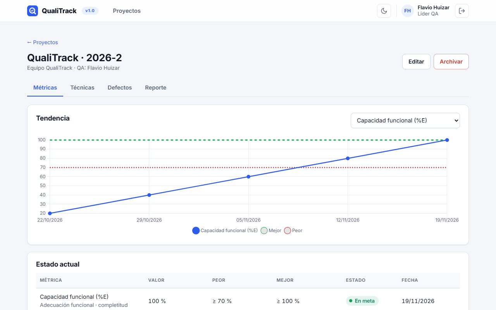
Pestaña Métricas: tendencia y estado actual.
Tendencia: la gráfica de una métrica en el tiempo. La línea verde es el valor mejor y la roja, el peor. La lista de la derecha cambia de métrica.
Estado actual: la última medición de cada métrica activa con su semáforo: En meta llega al valor mejor, En riesgo está entre el peor y el mejor, Fuera de meta es peor que el valor peor.
Si la columna Fecha dice Registro de defectos, la métrica se calcula sola desde la pestaña Defectos y no se captura a mano.
Registrar una medición
Todos los roles
Registrar medición, debajo del estado actual.
Pasos
Elige la Métrica.
Escribe el Valor en la unidad que indica la tabla (%, días, por funcionalidad…).
Revisa la Fecha; por omisión es hoy.
Si quieres, agrega una Nota.
Pulsa + Registrar medición. Aparece "Medición registrada." y la tabla, la gráfica y el índice se actualizan.
Reglas
No se aceptan fechas futuras.
El valor debe ser un número.
Solo las métricas activas en el modelo del proyecto aceptan mediciones.
Definir el modelo de calidad del proyecto
Líder de QA y Administrador
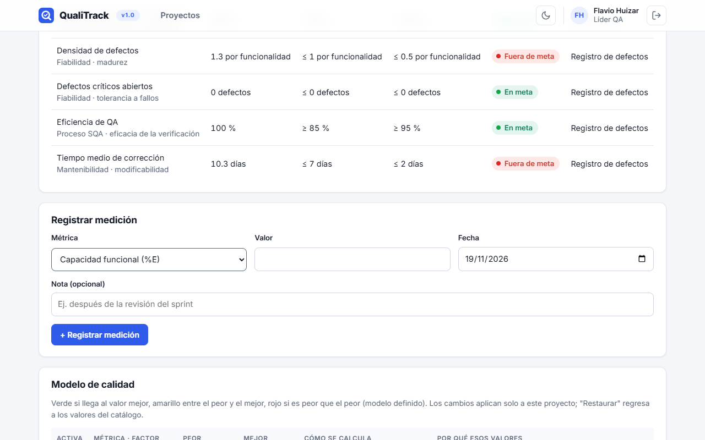
Modelo de calidad, al final de la pestaña Métricas.
Cada métrica tiene su criterio de ISO/IEC 25010, su valor peor y mejor, cómo se calcula y por qué se eligieron esos valores.
Activa: desmarca una métrica para que no cuente en el índice de este proyecto.
Peor y mejor: edita los valores y guarda. Los dos son obligatorios.
Restaurar: regresa la métrica a los valores del catálogo.
+ Agregar métrica propia: código, nombre, unidad, si es mejor un valor alto o bajo, valor peor y mejor, criterio de ISO/IEC 25010 y de dónde salen los valores.
Los cambios valen solo para este proyecto; los demás no se ven afectados.
6Técnicas de SQA
Planear las técnicas del proyecto
Líder de QA y Administrador
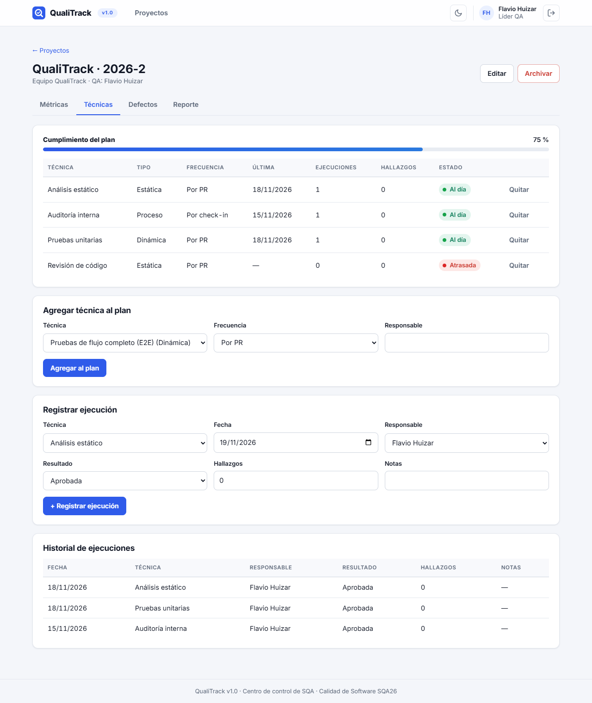
Pestaña Técnicas: plan, cumplimiento, formularios e historial.
Pasos
En Agregar técnica al plan, elige la técnica y su frecuencia, y escribe el responsable.
Pulsa Agregar al plan. Quitar la saca del plan.
Cumplimiento del plan es el porcentaje de técnicas al día.
Una técnica que ya está en el plan no se agrega otra vez: se registra una ejecución.
Frecuencia
Se marca "Atrasada" después de
Por PR
7 días
Semanal
7 días
Por check-in
14 días
Mensual
30 días
Registrar la aplicación de una técnica
Todos los roles
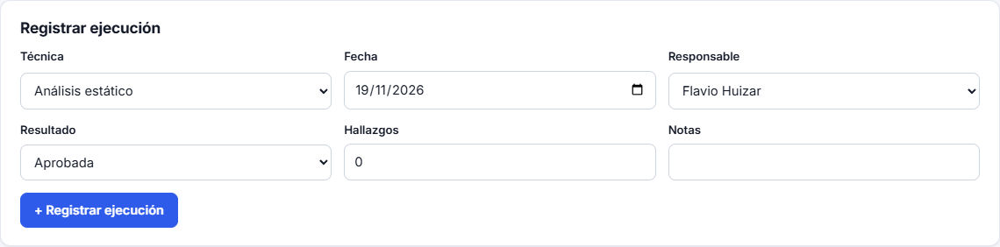
Registrar ejecución.
Pasos
Elige la técnica del plan y revisa la fecha.
Elige el Responsable de la lista de usuarios; por omisión eres tú.
Elige el Resultado (Aprobada, Con hallazgos o Rechazada) y escribe cuántos hallazgos hubo y, si quieres, notas (por ejemplo, el enlace al PR).
Pulsa + Registrar ejecución. Aparece en el Historial de ejecuciones y el cumplimiento se recalcula.
Reglas
No se aceptan fechas futuras.
Una ejecución "Aprobada" no admite hallazgos: si los hubo, elige "Con hallazgos".
7Registro de defectos
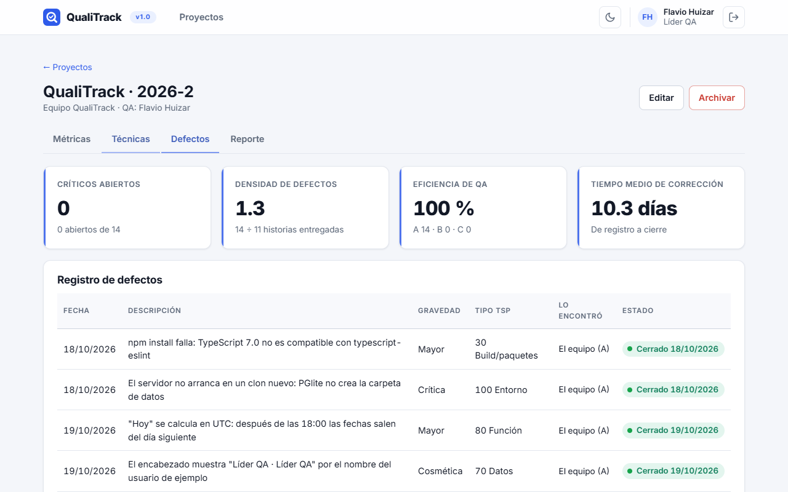
Pestaña Defectos: las 4 métricas que calcula el registro y la lista de defectos.
Indicador
Cómo se calcula
Críticos abiertos
Defectos de gravedad crítica sin cerrar
Densidad de defectos
Total de defectos ÷ historias entregadas del proyecto
Eficiencia de QA
Defectos que encontró el equipo (A) ÷ todos (A + B cliente + C usuario)
Tiempo medio de corrección
Días promedio desde que se registra un defecto hasta que se cierra
Registrar y cerrar un defecto
Todos los roles
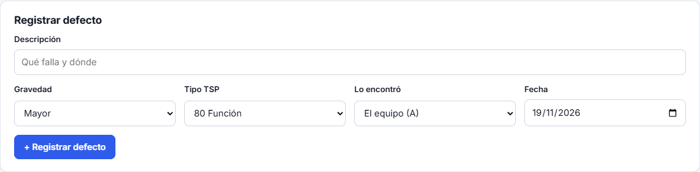
Registrar defecto, debajo de la lista.
Registrar
Escribe la Descripción: qué falla y dónde.
Elige la Gravedad (crítica, mayor, menor o cosmética) y el Tipo TSP (por ejemplo 50 Interfaz u 80 Función).
En Lo encontró, elige el equipo, el cliente o un usuario, y revisa la fecha.
Pulsa + Registrar defecto.
Cerrar
En la fila del defecto, revisa la fecha de cierre; no puede ser anterior a la de registro.
Pulsa Cerrar. El estado cambia a "Cerrado" con su fecha.
Si el proyecto no tiene historias entregadas, la densidad no se calcula: captúralas con Editar.
8Reporte de salud
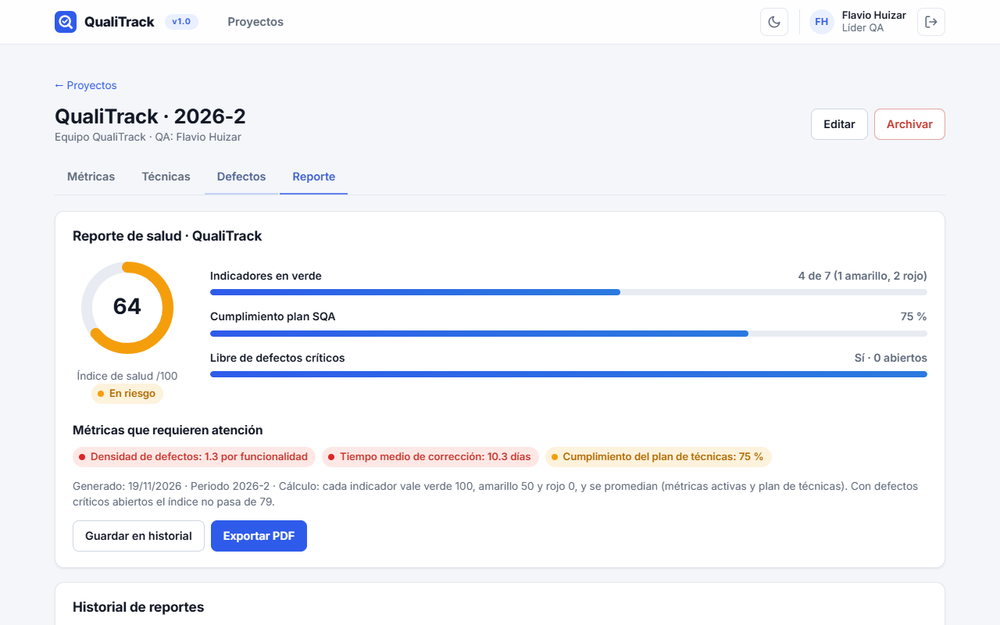
Pestaña Reporte.
Índice de salud (0 a 100) con su nivel: En meta, En riesgo o Fuera de meta (sección 10).
Barras: indicadores en verde, cumplimiento del plan de técnicas y si el proyecto está libre de defectos críticos.
Métricas que requieren atención: las que están en amarillo o en rojo, con su valor.
Guardar en historial guarda el índice de hoy con un resumen, para comparar entregas.
Exportar PDF abre el diálogo de impresión del navegador; elige "Guardar como PDF". El reporte sale siempre en tema claro y sin botones.
9Usuarios
Dar acceso a un integrante
Administrador
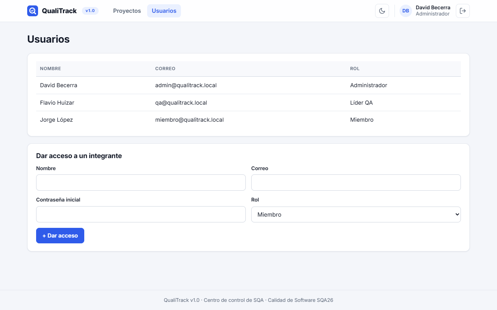
Pantalla Usuarios.
Pasos
Abre Usuarios en el menú.
Captura nombre, correo, contraseña inicial (8 caracteres o más) y rol.
Pulsa + Dar acceso y entrega el correo y la contraseña a la persona.
Notas
Un correo ya registrado se rechaza.
La persona aparece de inmediato en las listas de responsables.
En la versión 1.0 esta pantalla solo crea cuentas: no edita, no da de baja ni cambia contraseñas.
10Cómo se calcula la salud
QualiTrack usa un modelo definido: cada métrica tiene un valor peor aceptable y un valor mejor esperado, con su fuente. Estas son las métricas del catálogo:
Métrica
Peor
Mejor
Origen del dato
Capacidad funcional (%E)
70 %
100 %
Medición
Criterios de aceptación cumplidos
90 %
100 %
Medición
Densidad de defectos
1
0.5 por funcionalidad
Registro de defectos
Defectos críticos abiertos
0
0
Registro de defectos
Eficiencia de QA
85 %
95 %
Registro de defectos
Tiempo medio de corrección
7 días
2 días
Registro de defectos
Cada indicador vale 100 si está en verde, 50 en amarillo y 0 en rojo. El índice es el promedio de las métricas activas y del cumplimiento del plan de técnicas (verde desde 90 %, amarillo desde 70 %).
Con un defecto crítico abierto, el índice no pasa de 79, aunque todo lo demás esté en verde.
Nivel del proyecto: ≥ 80 En meta, de 50 a 79 En riesgo, < 50 Fuera de meta.
Ejemplo: 4 indicadores en verde, 1 en amarillo y 2 en rojo dan (4 × 100 + 50 + 0 + 0) ÷ 7 = 64.
11Modo oscuro y celular
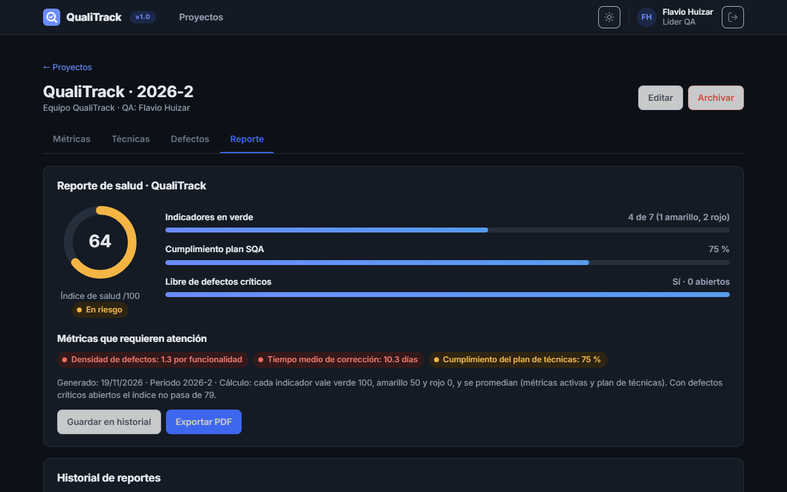
Modo oscuro.
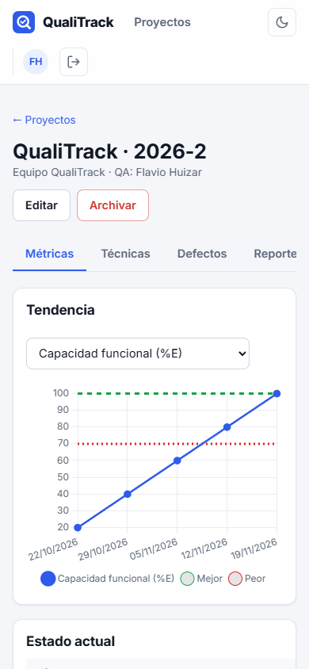
En celular.
El botón de la luna o del sol, en el encabezado, cambia entre modo claro y oscuro. La elección se guarda en tu navegador; la primera vez se usa la de tu sistema operativo.
En celular el contenido se acomoda en una columna. Las pestañas del proyecto se desplazan de lado.
12Mensajes y soluciones
Mensaje
Qué hacer
Correo o contraseña incorrectos
Revisa los dos datos. Si olvidaste la contraseña, pídele al Administrador una cuenta nueva.
La sesión expiró o no es válida
Pasaron 8 horas: vuelve a iniciar sesión.
Tu rol no tiene permiso para esta acción
Tu rol no permite esa acción (sección 2).
Ya hay un proyecto llamado "…" en el periodo …
Cambia el nombre o el periodo.
La fecha de medición no puede ser futura
Elige hoy o una fecha anterior.
La métrica no está activa en el modelo del proyecto…
Pide al Líder de QA que la active en el modelo de calidad.
Esa técnica ya está en el plan…
Registra una ejecución en lugar de agregarla otra vez.
Una ejecución aprobada no puede tener hallazgos…
Elige el resultado "Con hallazgos".
El proyecto está archivado…
Pide que lo restauren para registrar mediciones o defectos o cambiar su modelo.
La fecha de cierre no puede ser anterior a la de registro
Corrige la fecha de cierre del defecto.
Ya existe un usuario con ese correo…
Usa otro correo; esa persona ya tiene cuenta.
La página tarda en abrir
El servidor se estaba encendiendo; espera un minuto y recarga.
13Glosario
Término
Significado
SQA
Aseguramiento de la calidad del software: las actividades que demuestran que el producto y el proceso cumplen lo acordado.
Periodo
Semestre escolar del proyecto: 2026-1 o 2026-2.
Valor peor y mejor
Límites del modelo definido: el peor es lo mínimo aceptable y el mejor, lo esperado.
Semáforo
En meta (verde), En riesgo (amarillo) o Fuera de meta (rojo), según el valor peor y mejor.
Índice de salud
Calificación de 0 a 100 del proyecto (sección 10).
Técnica de SQA
Revisión de código, pruebas, auditoría, análisis estático u otra práctica que se planea y se registra.
Tipo TSP
Clasificación del defecto por su causa: 10 Documentación, 20 Sintaxis, 30 Build y paquetes, 40 Asignación, 50 Interfaz, 60 Verificación, 70 Datos, 80 Función, 90 Sistema, 100 Entorno.
A, B, C
Quién encontró el defecto: el equipo (A), el cliente (B) o un usuario (C).
ISO/IEC 25010
Norma que define las características de calidad del software (adecuación funcional, fiabilidad, usabilidad, mantenibilidad…).